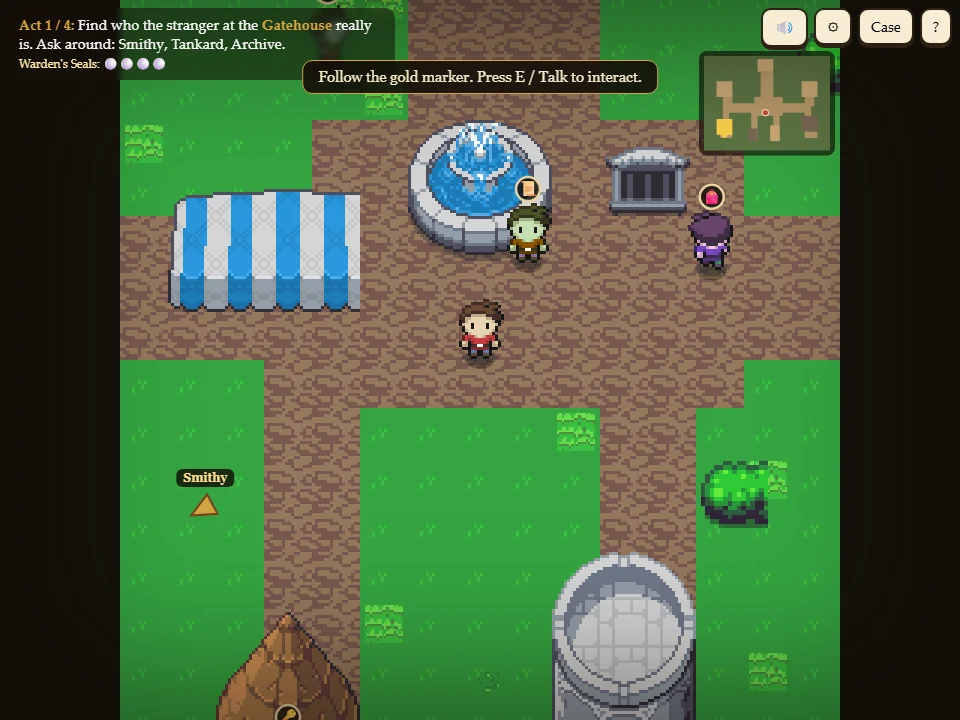
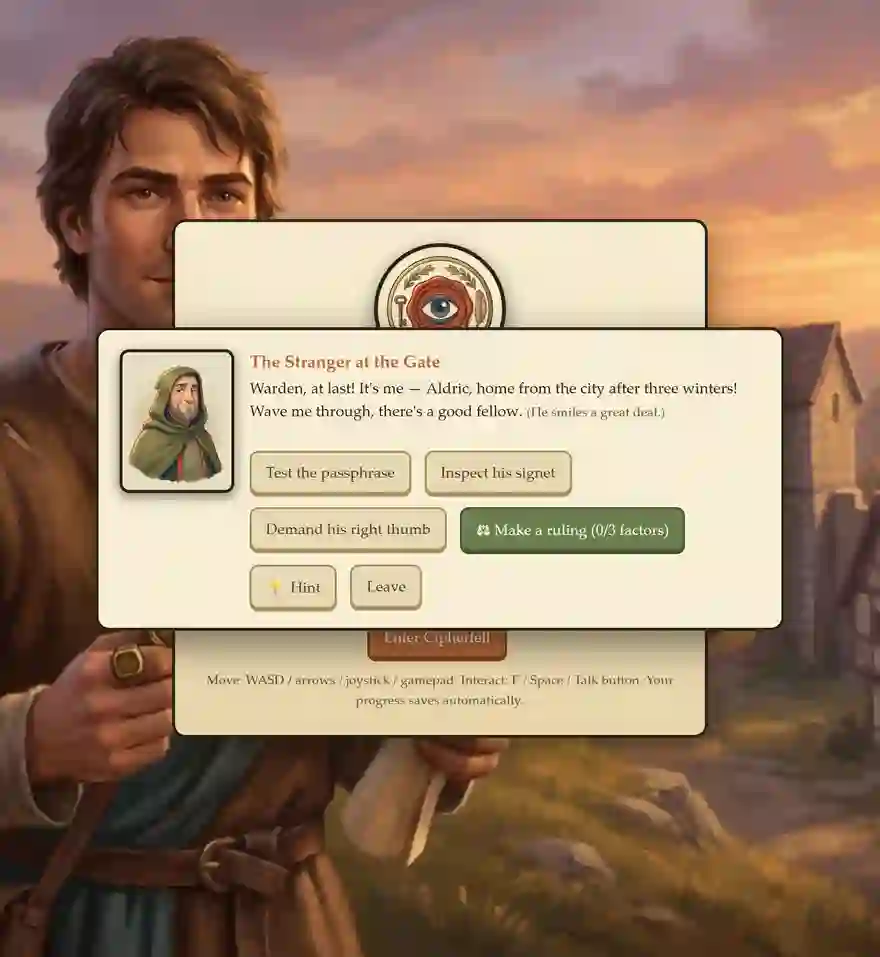
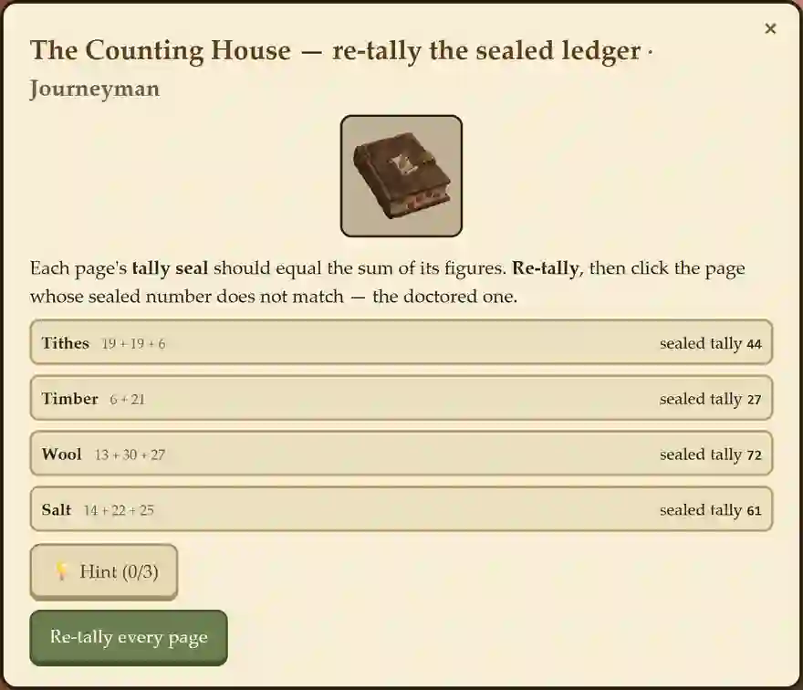
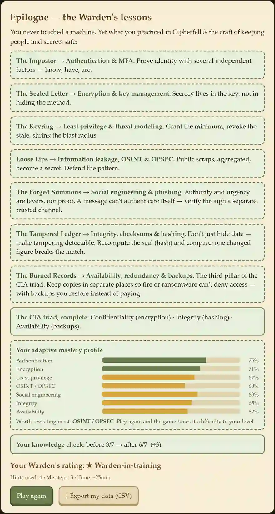

Facilitator deck · teaching cybersecurity mental models & AI literacy with a browser RPG
cipherfell.pages.dev — free, no install, no accounts
For K-12 (middle/high) and higher-ed instructors · no security background needed
A medieval-village mystery where players learn to think like a guardian of secrets — no machines, no jargon.
Seven "troubles" each teach one security mental model. Solve all seven, name the culprit.
~8-12 min per act · ~60-90 min for all seven · EN / KO · saves locally

Together they complete the CIA triad: confidentiality (encryption), integrity (hashing), availability (backups).
The same mental models are what students need to reason about modern AI risks. This is AI4K12 Big Idea 5, EDUCAUSE Ethical Considerations, UNESCO human-centered values.
| Act 1 Auth | AI face/voice spoofing of biometrics (Korshunov & Marcel 2018) |
| Act 4 OSINT | AI inference + training-data leakage (Shokri 2017, membership inference) |
| Act 5 Social eng | LLM-written phishing & voice clones (Heiding 2024) |
| Act 6 Integrity | detecting deepfaked media (Tolosana 2020) |
| Act 7 Availability | AI-accelerated ransomware (Razaulla 2023) |
Serious-game research: debriefing is "processing the game experience to turn it into learning." Every lesson card runs the same loop:
Your value isn't solving the puzzle — the game scaffolds that. Your value is the debrief: surface the misconception, then the real-world (and AI-era) transfer.
Pre-brief: "A stranger claims to be the lord's man. How would you know?"
Play: cross-examine on what he knows / has / is. The impostor passes the stealable factors, fails the unforgeable one.
Debrief: identity = independent factors; the weakest single one is the target. AI bridge: AI can spoof a face/voice — so liveness + multiple factors matter more.


Not a quiz bolted onto a game — succeeding requires the construct.
Act 6: re-tally each page's checksum and find the seal that no longer matches — the doctored entry. That is integrity reasoning.
Evidence per act: research/EVIDENCE_MAP.md (every mechanic → a verified citation).
| Single act | 1 period (45-50 min): one pre-brief + one act + debrief + exit ticket. Drop one idea into an existing unit. |
| 7-act unit | 1-2 weeks: one act per session, capstone last. Turn on pre/post around it. |
| Semester module | unit + AI-literacy bridge expanded into discussion/assignments + a graded reflection. |
K-12 single acts / one-week unit, lean on the tutorial & hints. HE full unit or semester + written transfer task.
Optional consent → a pre/post knowledge check (21-item bank, parallel forms) + a one-click CSV export.
Run research/analyze_sessions.py on the class folder: pre→post gain (paired t, dz), per-concept mastery, item difficulty, calibration.
Use the mastery profile to form re-teaching groups.
Anonymous & local by default · FERPA-friendly · no accounts.

1 · Open cipherfell.pages.dev on any browser
2 · Play one act yourself, then run it with the pre-brief → play → debrief loop
3 · Read the full docs/EDUCATOR_GUIDE.md for lesson cards, the standards crosswalk, and the data walkthrough
Evidence base: research/EVIDENCE_MAP.md · research/ADAPTIVE_DESIGN.md